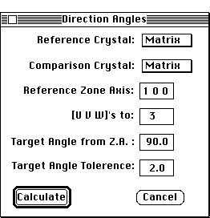

Distributed By: Virtual Labs
Angle Between Directions Setup Dialog Box
PATH...File Menu:New:Tables:angle between directions...

Angles Between Directions Table Setup Dialog Box
The Angle Between Direction set-up sets the selection criteria for calculation
of the angle between directions. The selection criteria consists of the
reference zone axis, the reference crystal, the maximum / minimum value
each index may reach, the desired angle between the reference direction
and the calculated direction and the tolerance for the target angle.
As with the Angle Between Planes window, it is possible to calculate angles
between directions for a direction from one crystal with respect to directions
in different crystals. This dialog box has two pop-up menus to allow the
selection of the respective second crystals. If the first pop-up menu is
used to select a crystal, the second menu will automatically duplicate the
selection. To obtain a separate crystal, the second pop-up menu must be
used.
Note: Crystal orientations are always set with respect to the matrix
crystal.
Author: J.ames T.
Stanley
 Desktop
Manual:Dialog Boxes
Desktop
Manual:Dialog Boxes
Distributed By: Virtual Labs
Last Updated:1/12/96 Sat, Apr 27, 1996